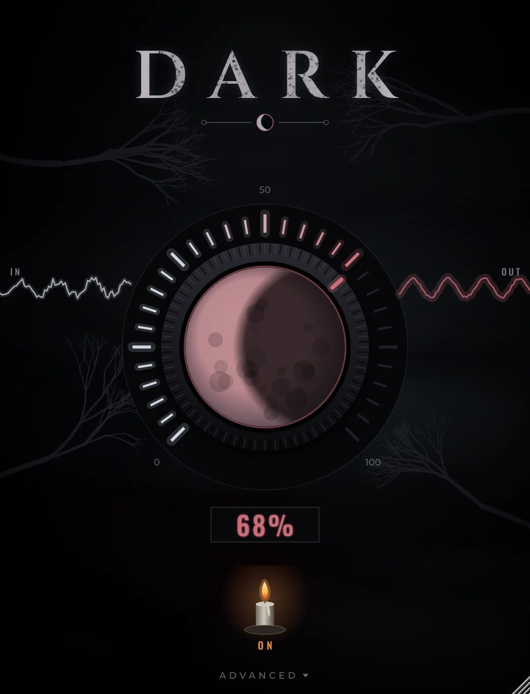

Soft clipper
One-knob mastering
A full mastering chain behind one knob. Turn it up and the board heats up with it: three-band compression, saturation, stereo width, air and a limiter, all moving together.
Free · Windows: .zip with the VST3 and the app · macOS: installer with AU, VST3 and the app, for Apple Silicon and Intel
User manual (PDF)
Overview
MASTERFUSE is a complete mastering chain controlled by one knob. As you turn AMOUNT up, it compresses three frequency bands, adds saturation, widens the stereo image, lifts the air and pushes the result into a two-stage limiter, all in balance with each other.
It is meant for quick, good-sounding loudness on a mix, a beat or a demo, without setting up a chain of separate plugins. LEVEL MATCH lets you hear what it does at the same loudness as the original, so you judge the sound and not the volume.
Good for
Under the hood
Everything below moves together when you turn the knob, in this order.
The mix is split into lows, mids and highs.
Each band is compressed on its own, with its own make-up gain, so a loud bass doesn't push the vocals down.
Each band's side signal is lifted a little, widening the stereo image.
Soft tape-style saturation adds density. The high band is oversampled 4× to stay clean.
A gentle tone curve adds warmth around 700 Hz and openness above about 4 kHz.
A slow leveller followed by a fast look-ahead stage, with a ceiling of −0.1 dBFS.
Quick start
Reference
How much MASTERFUSE does, from untouched (0%) to full (100%). Compression, saturation, width, air and limiting all rise together. Double-click to return to 50%.
Switches the processing on or off to compare with the untouched sound.
Turns the processed sound down to the loudness of the untouched sound, so switching on and off compares the sound, not the volume. Turn it off before exporting.
Level going into the processing. Higher drives the compression and saturation harder.
How hard the result is pushed into the limiter. This is the loudness push.
Final level after the limiter. The limiter's ceiling is −0.1 dBFS.
Every plugin window scales from 60% to 200%: drag the bottom-right corner. Double-click a knob to return it to its default.
Tips
Install
Open the downloaded .zip. Inside is the plugin (.vst3) and a standalone app.
Move the .vst3 to C:\Program Files\Common Files\VST3. Every Windows DAW looks there.
Let your DAW scan for new plugins. The plugin shows up under Noise Division.
Windows 10 or 11, 64-bit. VST3 host or the standalone app.
Double-click the .pkg. It installs the Audio Unit, the VST3 and the standalone app.
Open System Settings, Privacy & Security, scroll down and click Open Anyway. This shows once, because the installers aren't from the App Store.
Logic and GarageBand find the AU on their next start. Ableton Live, FL Studio, Reaper, Bitwig and Studio One use the VST3.
macOS 10.13 or newer, Apple Silicon or Intel. AU or VST3 host, or the standalone app.
Installation, every control, tips and troubleshooting in one PDF to keep next to your DAW.
Help
LEVEL MATCH was on. Turn it off before exporting.
Check the .vst3 is in C:\Program Files\Common Files\VST3 (Windows) and rescan. On a Mac, run the installer again and restart the DAW.
Rescan with Verify plugins ticked in the plugin manager.
System Settings, Privacy & Security, Open Anyway. The installers aren't signed with an Apple developer certificate yet.
Click More info, then Run anyway. This only concerns the standalone app.
Drag the bottom-right corner. Every plugin scales from 60% to 200% and remembers the size.
E-mail noisedivision@proton.me with the plugin name, version, your DAW and your operating system.
More from Noise Division
Soft clipper

Multiband distortion

Spectral compressor

One-knob darkener

Spectral distortion
Support
Everything here is free and stays free. If a plugin made it into your tracks and you want to say thanks, a donation pays for the time that goes into new plugins and updates.